Improving the speed of the RDKit’s conformer generator
Published
September 29, 2022
Whether it’s making it go faster or producing better results, we’re always on the lookout for ways to improve the RDKit’s conformer generator. Earlier this year I spent some time using a profiler to look in detail at where the code spends its time and saw that a lot of time is spent in optimizing structures using the so-called “distance geometry forcefield” (see the documentation for more details about conformer generation). Directly changing the optimization code is one of those daunting tasks which is only to be undertaken when one has a lot of time available, so I wasn’t particularly enthusiastic about that. However, while looking at the code I realized that the behavior of the optimizer is controlled by a number of parameters which have rather arbitrary values. Given that I know we never really tried to systematically find the best values for these parameters and that they definitely can have an impact on how quickly the optimizations converge (as well as how well converged they are), it seemed like adjusting these would be a logical place to try and improve things.
Fortunately, we had a student, Thibault Kläy, starting a semester project in the group who was willing to take on this project. This post has a brief description of what Thibault did and an exploration of the key results from his project.
TL;DR Thibault found that increasing one of the force field convergence parameters (optimizerForceTol) from its default value of 0.001 to 0.0135 reduced the average run time of conformer generation by around 20% for the >4000 molecules in the Platinum set. This improvement in run time came without a significant decrease in the quality of the conformers, as measured by how close we get to the crystal conformer. This will be the default value for optimizerForceTol starting in the 2022.09 release, but you can already change the value yourself, see below.
Finding the best parameters
At first I hoped that we’d be able to adjust the parameters while only making small changes to the conformers generated… this turned out to be competely unrealistic, so we decided to evaluate the quality of the results the same way we validated the results in the ETKDG paper: by looking at how well we reproduce crystal conformers. Since using the CSD compounds we used in the original paper was complicated (from a licensing perspective), we just used the PDB structures from the Platinum set. We filtered this down to only include molecules with less than 50 heavy atoms.
Thibault explored changing the following parameters: - optimizerForceTol - basinThresh - ERROR_TOL - MOVETOL - FORCETOL - TOLX
The first two of those can be modified by the user; the last four require recompiling the RDKit.
After running a lot of calculations Thibault found that the only parameters which really yielded a significant improvement in runtime performance were optimizerForceTol and basinThresh, that optimizerForceTol gave larger improvements, and that the results were not cumulative (so once optimizerForceTol was set to an optimal value changing basinThresh no longer really improved things).
The rest of this post repeats some of Thibault’s analysis to show the impact of setting optimizerForceTol to the new recommended value.
from rdkit import Chemfrom rdkit.Chem.Draw import IPythonConsoleIPythonConsole.ipython_3d =Truefrom rdkit.Chem import rdDistGeomfrom rdkit.Chem import TorsionFingerprintsfrom rdkit.Chem import AllChem%matplotlib inlineimport pylab as pltplt.style.use('tableau-colorblind10')plt.rcParams['font.size'] ='16'import numpy as npimport rdkitprint(rdkit.__version__)
2022.03.5
Start by generating conformers using the original and updated values of optimizerForceTol. This takes quite a while to run:
import gzip
import time
import pickle
etkdg = rdDistGeom.ETKDGv3()
etkdg.randomSeed = 0xa700f
etkdg.verbose = False
etkdg.numThreads = 8
conformer_num=100
# 0.001 was the default value of optimizerForceTol up to and including v2022.03
timings = []
for forceTol in ('0.001', '0.0135'):
print(
f'''---------------------------
forceTol: {forceTol}
---------------------------''')
inf = gzip.open('../data/platinum_dataset_2017_01.sdf.gz')
outf = gzip.open(f'./results/platinum_forcetol_{forceTol}.100confs.pkl.gz','wb+')
etkdg.optimizerForceTol = float(forceTol)
lts = []
for i,m in enumerate(Chem.ForwardSDMolSupplier(inf,removeHs=False)):
if not m:
continue
if m.GetNumHeavyAtoms()>50:
continue
Chem.AssignStereochemistryFrom3D(m)
start = time.time()
conformation_ids = rdDistGeom.EmbedMultipleConfs(m, numConfs=conformer_num, params=etkdg)
lts.append(time.time()-start)
if not (i+1)%1000:
print(f"***** done {i+1}")
pickle.dump(m,outf)
timings.append(lts)
with open('./results/optmizer_force_tol_timings.pkl','wb+') as outf:
pickle.dump(timings,outf)
Repeat that exercise for random coordinate embedding, this one takes even longer.
import gzip
import time
import pickle
etkdg = rdDistGeom.ETKDGv3()
etkdg.randomSeed = 0xa700f
etkdg.verbose = False
etkdg.numThreads = 8
etkdg.useRandomCoords = True
conformer_num=100
# 0.001 was the default value of optimizerForceTol up to and including v2022.03
timings = []
for forceTol in ('0.001', '0.0135'):
print(
f'''---------------------------
forceTol: {forceTol}
---------------------------''')
inf = gzip.open('../data/platinum_dataset_2017_01.sdf.gz')
outf = gzip.open(f'./results/platinum_forcetol_{forceTol}.random_coords.100confs.pkl.gz','wb+')
etkdg.optimizerForceTol = float(forceTol)
lts = []
for i,m in enumerate(Chem.ForwardSDMolSupplier(inf,removeHs=False)):
if not m:
continue
if m.GetNumHeavyAtoms()>50:
continue
Chem.AssignStereochemistryFrom3D(m)
start = time.time()
conformation_ids = rdDistGeom.EmbedMultipleConfs(m, numConfs=conformer_num, params=etkdg)
lts.append(time.time()-start)
if not (i+1)%1000:
print(f"***** done {i+1}")
pickle.dump(m,outf)
timings.append(lts)
with open('./results/optmizer_force_tol_timings.random_coords.pkl','wb+') as outf:
pickle.dump(timings,outf)
There’s an extreme outlier there, remove it so that we can actually see something:
plt.hist([x for x in pcts if x>-0.5],bins=40);plt.xlabel('fractional runtime decrease');plt.title('optimizerForceTol 0.001 vs 0.0135');
The fact that the histogram is clearly shifted to the right indicates that using optimizerForceTol=0.0135 speeds things up for most of the molecules.
Now lets look at the fraction of the compounds appearing in various \(\Delta\) time bins:
bins = [-10,-.1,-0.05,0,0.05,0.1,0.15,0.2,0.25,0.3,10]nPts =len(pcts)for i inrange(len(bins)-1): frac =len([x for x in pcts if x>bins[i] and x<=bins[i+1]])/nPtsprint(f'{bins[i]: .2f} - {bins[i+1]: .2f}: {frac: .3f}')
thresh =0.5plt.rcParams['figure.figsize']=(7,7)plt.scatter(base_xtal_rms,mod_xtal_rms);lim =max(base_xtal_rms+mod_xtal_rms)plt.plot((0,lim),(0,lim),'k')plt.plot((0,lim),(thresh,lim+thresh),ls='dashed',color='grey')plt.plot((thresh,lim),(0,lim-thresh),ls='dashed',color='grey');plt.xlabel('optimizerForceTol=0.001');plt.ylabel('optimizerForceTol=0.0135');plt.title('platinum 100 confs/mol, RMSD to xtal conf');
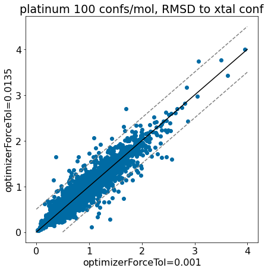
thresh =0.5plt.rcParams['figure.figsize']=(7,7)plt.hexbin(base_xtal_rms,mod_xtal_rms,cmap='Blues',bins='log');outside = [(x,y) for x,y inzip(base_xtal_rms,mod_xtal_rms) ifabs(x-y)>thresh]plt.scatter([x for x,y in outside],[y for x,y in outside],marker='.')lim =max(base_xtal_rms+mod_xtal_rms)plt.plot((0,lim),(0,lim),'k')plt.plot((0,lim),(thresh,lim+thresh),ls='dashed',color='grey')plt.plot((thresh,lim),(0,lim-thresh),ls='dashed',color='grey');plt.xlabel('optimizerForceTol=0.001');plt.ylabel('optimizerForceTol=0.0135');plt.title('platinum 100 confs/mol, RMSD to xtal conf');
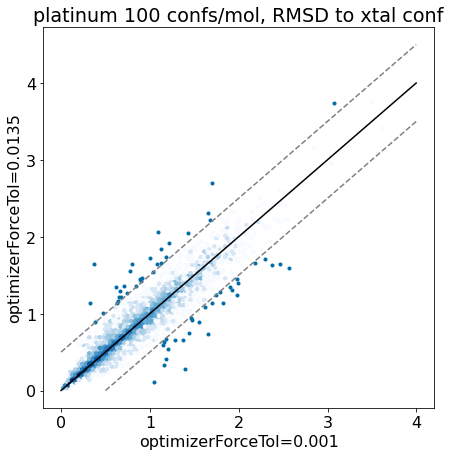
Based on these plots it looks like we haven’t negatively impacted our ability to reproduce crystal conformers.
Let’s look at the \(\Delta\) RMSD differences directly:
d = np.array(mod_xtal_rms)-np.array(base_xtal_rms)plt.hist(d,bins=20);plt.xlabel('RMSD(forceTol=0.0135)-RMSD(forceTol=0.001)')plt.title('platinum 100 confs/mol');
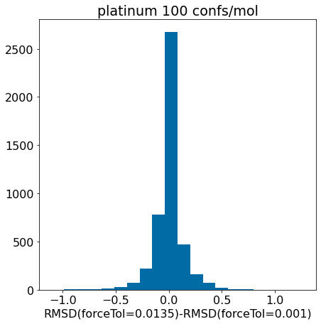
Zoom in:
d = np.array(mod_xtal_rms)-np.array(base_xtal_rms)plt.hist([x for x in d ifabs(x)<=0.75],bins=20);plt.xlabel('RMSD(forceTol=0.0135)-RMSD(forceTol=0.001)')plt.title('platinum 100 confs/mol');
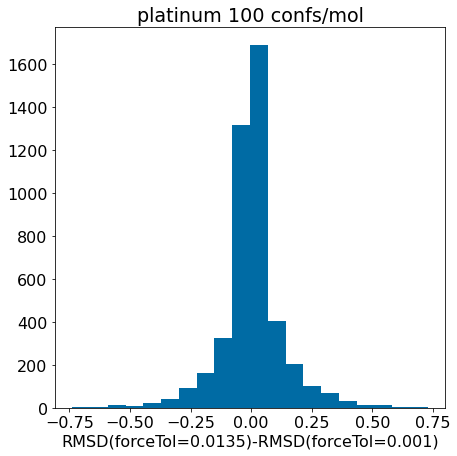
There really aren’t significant changes here.
TFD
RMSD, though familiar and intuitive, has some well-documented shortcomings. Torsion Fingerprint Differences (TFDs) were developed as an alternative metric for comparing structures which is less susceptible to some of these problems.
We used TFDs in the original ETKDG paper, so let’s try them here too
# The RDKit's TFD implementation doesn't currently (v2022.03) have a fast implementation of# the method we need, so do it directly here:def GetBestTFDBetweenMolecules(mol1, mol2, confId1=-1, useWeights=True, maxDev='equal', symmRadius=2, ignoreColinearBonds=True):""" Wrapper to calculate the TFD between two molecules. All conformers of mol2 will be compared against a single conformer of mol1 and the lowest TFD returned Important: The two molecules must be instances of the same molecule Arguments: - mol1: first instance of the molecule of interest - mol2: second instance the molecule of interest - confId1: conformer index for mol1 (default: first conformer) - useWeights: flag for using torsion weights in the TFD calculation - maxDev: maximal deviation used for normalization 'equal': all torsions are normalized using 180.0 (default) 'spec': each torsion is normalized using its specific maximal deviation as given in the paper - symmRadius: radius used for calculating the atom invariants (default: 2) - ignoreColinearBonds: if True (default), single bonds adjacent to triple bonds are ignored if False, alternative not-covalently bound atoms are used to define the torsion Return: TFD value """if (Chem.MolToSmiles(mol1) != Chem.MolToSmiles(mol2)):raiseValueError("The two molecules must be instances of the same molecule!") mol2 = TorsionFingerprints._getSameAtomOrder(mol1, mol2) tl, tlr = TorsionFingerprints.CalculateTorsionLists(mol1, maxDev=maxDev, symmRadius=symmRadius, ignoreColinearBonds=ignoreColinearBonds)# first molecule torsion1 = TorsionFingerprints.CalculateTorsionAngles(mol1, tl, tlr, confId=confId1)if useWeights: weights = TorsionFingerprints.CalculateTorsionWeights(mol1, ignoreColinearBonds=ignoreColinearBonds) best =1e8for conf in mol2.GetConformers():# second molecule torsion2 = TorsionFingerprints.CalculateTorsionAngles(mol2, tl, tlr, confId=conf.GetId())if useWeights: tfd = TorsionFingerprints.CalculateTFD(torsion1, torsion2, weights=weights)else: tfd = TorsionFingerprints.CalculateTFD(torsion1, torsion2) best =min(best,tfd)return best
thresh =0.2plt.rcParams['figure.figsize']=(7,7)plt.scatter(base_xtal_tfd,mod_xtal_tfd);lim =max(base_xtal_tfd+mod_xtal_tfd)plt.plot((0,lim),(0,lim),'k')plt.plot((0,lim),(thresh,lim+thresh),ls='dashed',color='grey')plt.plot((thresh,lim),(0,lim-thresh),ls='dashed',color='grey');plt.xlabel('optimizerForceTol=0.001');plt.ylabel('optimizerForceTol=0.0135');plt.title('platinum 100 confs/mol, TFD to xtal conf');
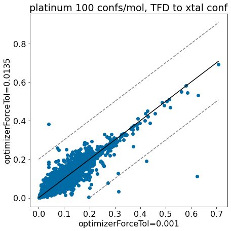
thresh =0.2plt.rcParams['figure.figsize']=(7,7)plt.hexbin(base_xtal_tfd,mod_xtal_tfd,cmap='Blues',bins='log');lim =max(base_xtal_tfd+mod_xtal_tfd)plt.plot((0,lim),(0,lim),'k')plt.plot((0,lim),(thresh,lim+thresh),ls='dashed',color='grey')plt.plot((thresh,lim),(0,lim-thresh),ls='dashed',color='grey');plt.xlabel('optimizerForceTol=0.001');plt.ylabel('optimizerForceTol=0.0135');plt.title('platinum 100 confs/mol, TFD to xtal conf');
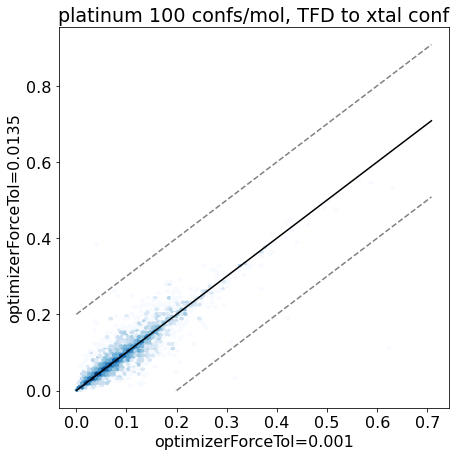
Look at the histogram of the changes in TFD between the two methods
d = np.array(mod_xtal_tfd)-np.array(base_xtal_tfd)plt.hist(d,bins=20);plt.xlabel('TFD(forceTol=0.0135)-TFD(forceTol=0.001)')plt.title('platinum 100 confs/mol');
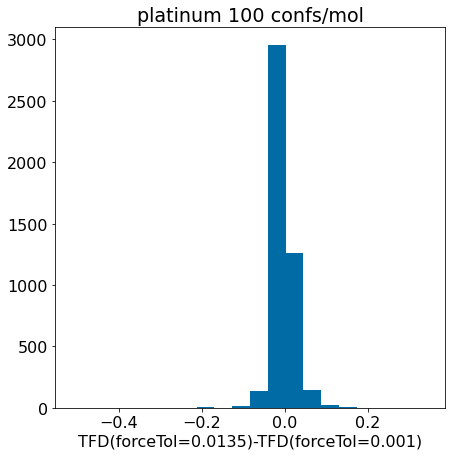
Zoom in:
d = np.array(mod_xtal_tfd)-np.array(base_xtal_tfd)plt.hist([x for x in d ifabs(x)<0.1],bins=20);plt.xlabel('TFD(forceTol=0.0135)-TFD(forceTol=0.001)')plt.title('platinum 100 confs/mol');
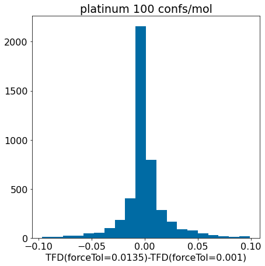
Conclusion: the updated force field parameters don’t have a much of an impact at all on our ability to reproduce crystal conformers as measured by TFD.
Repeat the analysis for random-coordinate embedding
The random-coordinate embedding scheme is more robust than standard embedding, but it is (as implemented in the RDKit) also slower. Let’s see how much it is affected by the modified optimizerForceTol
plt.hist([x for x in pcts if x>-0.5],bins=40);plt.xlabel('fractional runtime decrease');plt.title('optimizerForceTol 0.001 vs 0.0135');
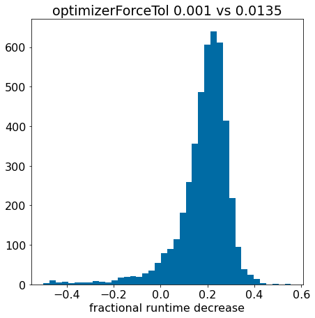
There are a small number of compounds here where things get worse, but it looks like there is an overall improvement similar to what we saw before.
Look at the bins and quantiles to quantify that:
bins = [-10,-.1,-0.05,0,0.05,0.1,0.15,0.2,0.25,0.3,10]nPts =len(pcts)for i inrange(len(bins)-1): frac =len([x for x in pcts if x>bins[i] and x<=bins[i+1]])/nPtsprint(f'{bins[i]: .2f} - {bins[i+1]: .2f}: {frac: .3f}')
thresh =0.5plt.rcParams['figure.figsize']=(7,7)plt.scatter(base_xtal_rms,mod_xtal_rms);lim =max(base_xtal_rms+mod_xtal_rms)plt.plot((0,lim),(0,lim),'k')plt.plot((0,lim),(thresh,lim+thresh),ls='dashed',color='grey')plt.plot((thresh,lim),(0,lim-thresh),ls='dashed',color='grey');plt.xlabel('optimizerForceTol=0.001');plt.ylabel('optimizerForceTol=0.0135');plt.title('platinum 100 confs/mol, RMSD to xtal conf');
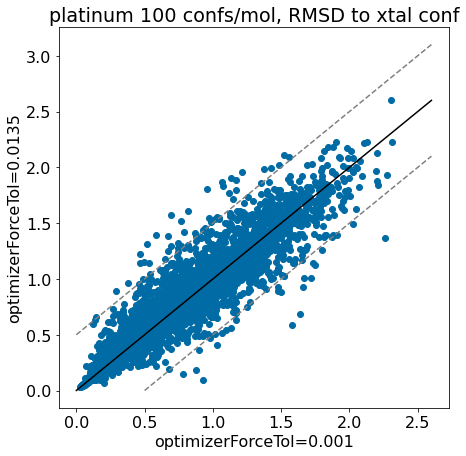
thresh =0.5plt.rcParams['figure.figsize']=(7,7)plt.hexbin(base_xtal_rms,mod_xtal_rms,cmap='Blues',bins='log');outside = [(x,y) for x,y inzip(base_xtal_rms,mod_xtal_rms) ifabs(x-y)>thresh]plt.scatter([x for x,y in outside],[y for x,y in outside],marker='.')lim =max(base_xtal_rms+mod_xtal_rms)plt.plot((0,lim),(0,lim),'k')plt.plot((0,lim),(thresh,lim+thresh),ls='dashed',color='grey')plt.plot((thresh,lim),(0,lim-thresh),ls='dashed',color='grey');plt.xlabel('optimizerForceTol=0.001');plt.ylabel('optimizerForceTol=0.0135');plt.title('platinum 100 confs/mol, RMSD to xtal conf');
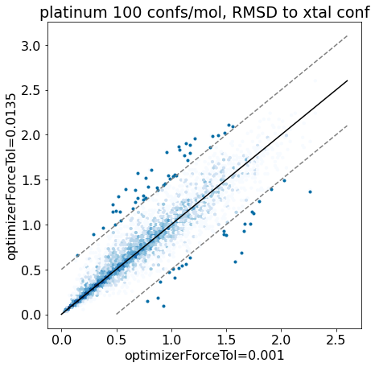
Once again, it looks like we haven’t negatively impacted our ability to reproduce crystal conformers in any serious way.
Let’s look at the \(\Delta\) RMSD differences directly:
d = np.array(mod_xtal_rms)-np.array(base_xtal_rms)plt.hist(d,bins=20);plt.xlabel('RMSD(forceTol=0.0135)-RMSD(forceTol=0.001)')plt.title('platinum 100 confs/mol');
Zoom in:
d = np.array(mod_xtal_rms)-np.array(base_xtal_rms)plt.hist([x for x in d ifabs(x)<=0.5],bins=20);plt.xlabel('RMSD(forceTol=0.0135)-RMSD(forceTol=0.001)')plt.title('platinum 100 confs/mol');
thresh =0.2plt.rcParams['figure.figsize']=(7,7)plt.scatter(base_xtal_tfd,mod_xtal_tfd);lim =max(base_xtal_tfd+mod_xtal_tfd)plt.plot((0,lim),(0,lim),'k')plt.plot((0,lim),(thresh,lim+thresh),ls='dashed',color='grey')plt.plot((thresh,lim),(0,lim-thresh),ls='dashed',color='grey');plt.xlabel('optimizerForceTol=0.001');plt.ylabel('optimizerForceTol=0.0135');plt.title('platinum 100 confs/mol, TFD to xtal conf');
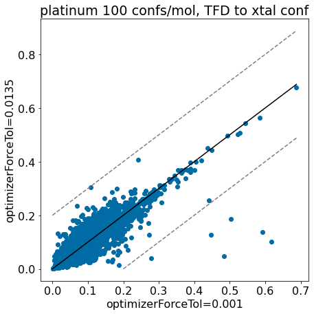
thresh =0.2plt.rcParams['figure.figsize']=(7,7)plt.hexbin(base_xtal_tfd,mod_xtal_tfd,cmap='Blues',bins='log');lim =max(base_xtal_tfd+mod_xtal_tfd)plt.plot((0,lim),(0,lim),'k')plt.plot((0,lim),(thresh,lim+thresh),ls='dashed',color='grey')plt.plot((thresh,lim),(0,lim-thresh),ls='dashed',color='grey');plt.xlabel('optimizerForceTol=0.001');plt.ylabel('optimizerForceTol=0.0135');plt.title('platinum 100 confs/mol, TFD to xtal conf');
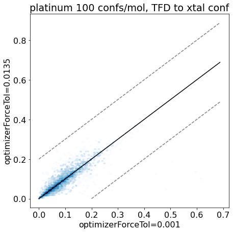
Look at the histogram of the changes in TFD between the two methods
d = np.array(mod_xtal_tfd)-np.array(base_xtal_tfd)plt.hist(d,bins=20);plt.xlabel('TFD(forceTol=0.0135)-TFD(forceTol=0.001)')plt.title('platinum 100 confs/mol');
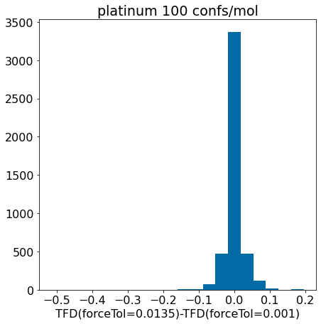
Zoom in:
d = np.array(mod_xtal_tfd)-np.array(base_xtal_tfd)plt.hist([x for x in d ifabs(x)<0.1],bins=20);plt.xlabel('TFD(forceTol=0.0135)-TFD(forceTol=0.001)')plt.title('platinum 100 confs/mol');